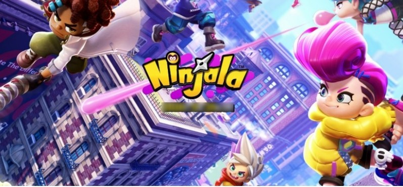

- 모여봐요 동물의 숲
- Ninjala
- 포켓몬스터 소드/실드
- 큐브 크리에이터 x
- 별의 커비 스타 얼라이즈
'Ninjala'
는 전세계 온라인 pvp게임이다. 스테이지는 4개 정도로 WMA연습장, 이글 시티, 시노비 시티, 크로와상 아레나 정도가 있으며 껌으로 무기를 만들거나 공격하고 방어하는 게임이다. 서비스 종류는 배틀, 커스터마이징, 쇼핑, 스토리 모드 등이 있으며 쇼핑에서는 jala숍, 셀렉트 숍, 트렌디 숍, 뽑기가 있으며 배틀에서는 PVP, 배틀로얄, 팀 배틀 등이 있다.
